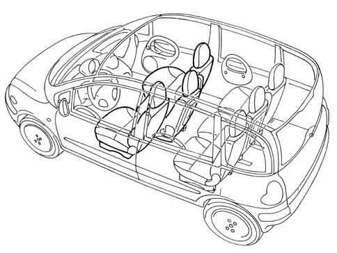
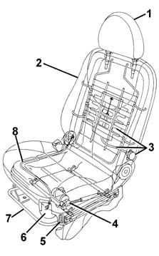
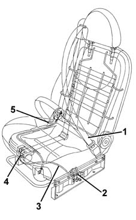

Introduction - FRONT SEATS
- Path
- Descriptions > 70 FITTINGS > 7045 FRONT SEATS > Introduction - FRONT SEATS
- Kind
- system description
- Applies to
- all engines; all production periods
- Interactive page
- https://sloeber94.github.io/elrnDB-fMltpl/en/#/2892462
Applies to: all engines; all production periods
Submarining
This is the phenomenon which can occur in the case of a frontal impact. Even with the seat belt fastened, the body of the occupant of the sea tends to slide under the belt.
-

The vehicle has six seats which are identical in terms of size and structure.
The backrests on all the seats can be adjusted by means of side lever and a Bowden cable.
The front seats can be adjusted lengthwise.
The driver's seat also has a special electrically operated mechanism for height adjustment and may be fitted with lumbar adjustment (optional).

1, Head restraint 2, Backrest 3, Lumbar adjustment device 4, Electrically operated height adjustment device 5, Height adjustment switches 6, Backrest angle adjustment lever 7, Lengthwise adjustment lever 8, Bowden cable backrest angle adjustment device
There is a sliding compartment underneath the outside of the passenger seat.
The centre seat has a backrest which can be transformed, if it is titled completely forwards, into a table with an oddments pocket and glass holders.
The three front seats have pretensioned seat belts. The centre seat is particularly innovative with a retention system entirely located in the seat. The pretensioner is fixed on the right hand side, whilst the mechanical sensor is fixed to the left hand side: the two components are connected by means of a device which transmits impact impulses known as the shock tube.
The seat is also fixed using six bolts and has a strengthened structure to support the forces coming from the "pull" of the pretensioner.

1, Seat belt 2, Mechanical sensor 3, Shock tube device 4, Reel with pretensioner 5, Lower seat belt fixing
Structure
The seats have an aluminium interlining which has an anti-submarining function, whilst the structure of the seat is made from pressed steel designed to improve robustness and energy absorption in the case of rear impacts. The reclining backrest has adjustable head restraints which can be locked in all the intermediate positions in order to limit the danger stemming from "whiplash".